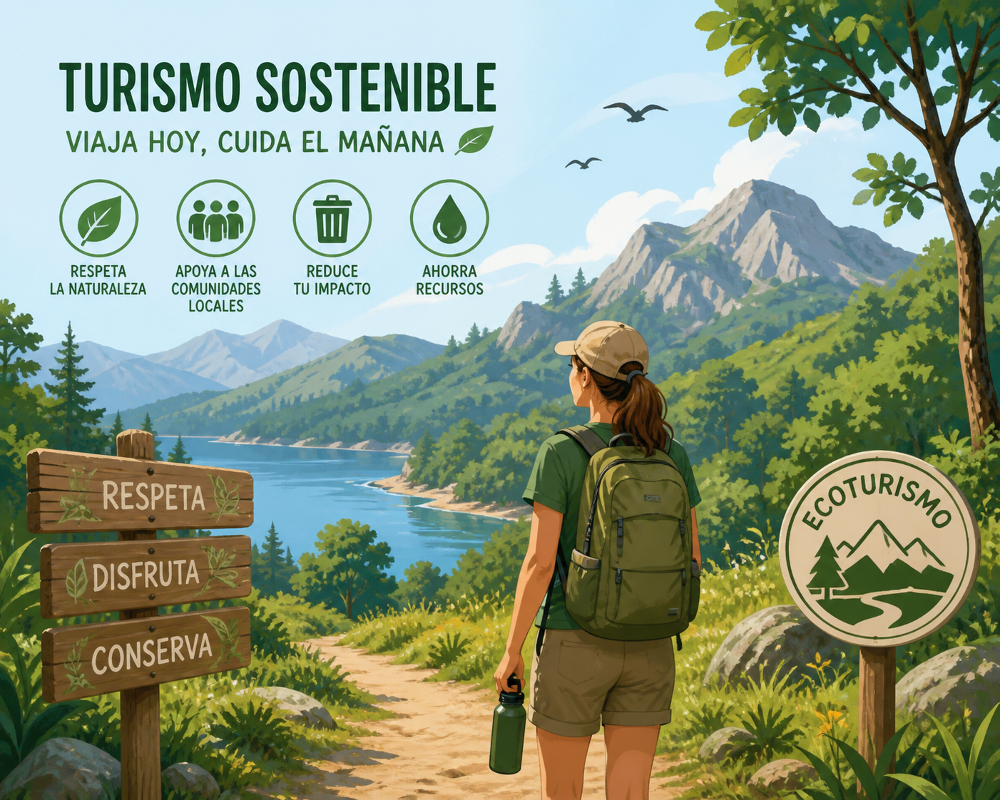

<h2 style="font-variant-numeric: normal; font-variant-east-asian: normal; font-variant-alternates: normal; font-size-adjust: none; font-kerning: auto; font-optical-sizing: auto; font-feature-settings: normal; font-variation-settings: normal; font-variant-position: normal; font-variant-emoji: normal; font-weight: 700; font-stretch: normal; font-size: 22px; line-height: 32px; font-family: quote-cjk-patch, Inter, system-ui, -apple-system, BlinkMacSystemFont, "Segoe UI", Roboto, Oxygen, Ubuntu, Cantarell, "Open Sans", "Helvetica Neue", sans-serif; margin: 32px 0px 16px; color: rgb(15, 17, 21); background-color: rgb(255, 255, 255);">Creamos el guion para el vídeo-guía turístico</h2>
- Duración
- 1 sesión, 60'
- Agrupamiento
- Grupos de 4
¿Qué vamos a hacer?
Con la información que recopilasteis en la Tarea 5, cada grupo va a redactar un guion breve para el vídeo-guía turística. El guion incluirá, para cada lugar, qué imágenes se ven, qué se dice, cuánto dura y un mensaje de turismo sostenible. Después, lo revisaréis entre vosotros (coevaluación) usando una lista de cotejo para aseguraros de que no falta nada.
¿Qué necesitas?
- El documento de Google Docs con la investigación de la Tarea 5
- El documento compartido para el guion (lo creará el profesor o profesora, o lo hacéis vosotros)
- La lista de cotejo (al final de esta página, en papel o digital)
Paso 1: Preparad el documento del guion
Cread un documento nuevo en Google Docs (compartido con el profesor o profesora). Poned este título:
Paso 2: Rellenar el guión del vídeo-guía turística – Grupo (nombre de alumnos/as)
Debajo, haced una tabla con estas columnas. Así será más fácil organizar la información: lugar; imágenes (qué se ve); voz en off (qué se dice); y, duración aprox. A continuación tienes un ejemplo:
| Lugar | Imágenes | Voz en off | Duración |
| Iglesia de San Pedro |
Describe las imágenes que vais a mostrar mientras suena la voz. Piensa en planos variados:
|
Texto que dirás: "Esta iglesia se construyó en el siglo XVI, aunque su torre es del XVIII. En su interior se guarda una talla de la Virgen del Rosario que es muy querida por los vecinos. Si entras a visitarla, recuerda que está prohibido hacer fotos con flash para no dañar las pinturas." | Calcula cuánto tiempo se tarda en decir el texto. Cada lugar podría ocupar entre 30'' y 1 minuto. |
Por último, pensad en un mensaje que haga ver y reflexionar al turista sobre la necesidad de practicar un turismo sostenible, teniendo en cuenta los aspectos positivos que tendría, y qué efectos negativos puede haber si no se practica.

Paso 3: Revisad el guión entre todos los miembros
Antes de darlo por terminado, leed el guion completo en voz alta dentro del grupo. Preguntaos:
- ¿Se entiende todo?
- ¿Hay alguna palabra muy difícil?
- ¿Las imágenes que hemos pensado son fáciles de grabar o buscar?
- ¿El mensaje sostenible aparece en todos los lugares?
Paso 4: Coevaluación con la lista de cotejo
Ahora viene la parte más interesante: intercambiar los guiones con otro grupo para que os ayuden a mejorarlo.
El profesor o profesora asignará a cada grupo un "grupo revisor". Vosotros recibiréis el guion de otro grupo, y otro grupo revisará el vuestro.
¿Cómo se revisa?
Usando la lista de cotejo que encontrarás en el apartado de "elementos curriculares". También la podrás encontrar en el Classroom de la asignatura. Es muy sencilla: solo hay que marcar con una tic verde ✔️ si el guion cumple o no cumple cada aspecto.
Normas de la coevaluación:
- Sé constructivo/a: no digas "esto está mal", di "esto se podría mejorar así…"
- Sé específico/a: en lugar de "no me gusta", di "la voz en off del tercer lugar es muy larga, podríais acortarla".
- Respeta el trabajo del otro grupo: ellos han dedicado tiempo y esfuerzo. Tu misión es ayudarles, no hundirles.
¡Manos a la obra, guionistas! Un buen guion es el 70% de un buen vídeo. El otro 30% es grabar y editar, pero eso lo haremos en la Tarea 7. ¡Vosotros podéis!